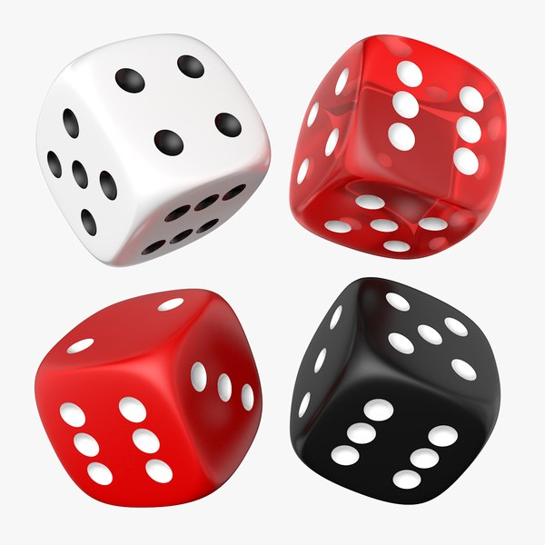

cada unidad tiene sus propias características, desde los puntos de armadura hasta las armas disponibles y los chasis (entiendase chasis como la forma del mech).

3 colores para indicar los tipos de movimiento (esto se explica más adelante), 3 dados por unidad.
(Simple recomendación)
Rojo indicando el movimiento de correr
Azul indicando el movimiento de caminar
Blanco inicando el movimiento de saltar
1 color para chequeos (tiradas de disparo, balance, etc.), se pueden tener solo dos, o un par por jugador. 
Bosque ligero -1
Bosque denso -2
Terreno díficil -2
Subir un nivel de altura -2
Bajar un nivel de altura tiene un costo normal
El terreno dificíl se puede entender como ruinas, escombros, o similares.
Cada arma tiene sus valores de alcance, daño, reglas especiales, y cantidad por lo que cada tirada de disparo tiene un objetivo en puntos distinto, esto se mide con "G.A.T.O.R.".
Es posible encontrar terreno que impida la visión o dificulte los disparos